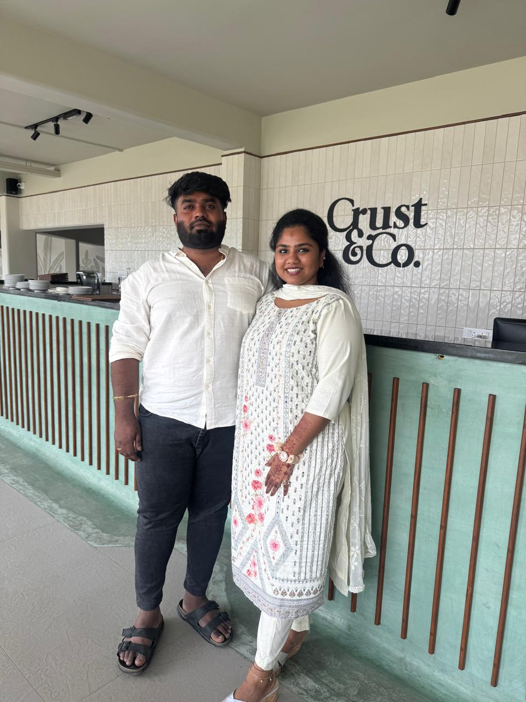
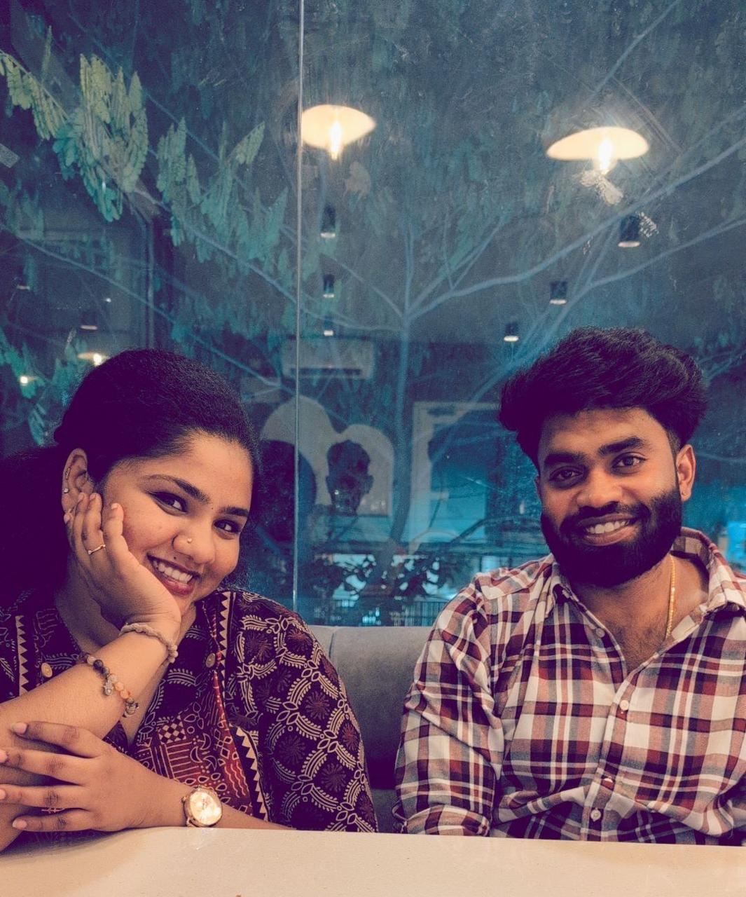
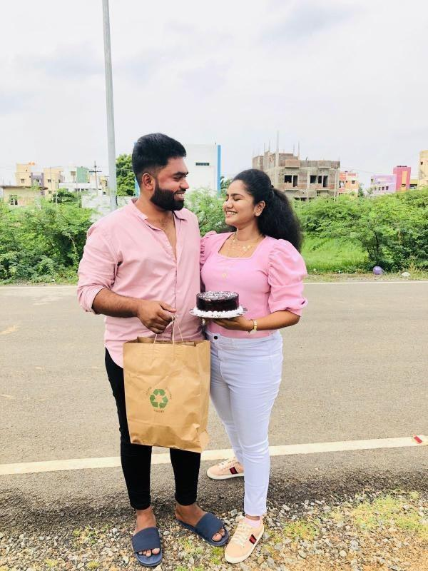
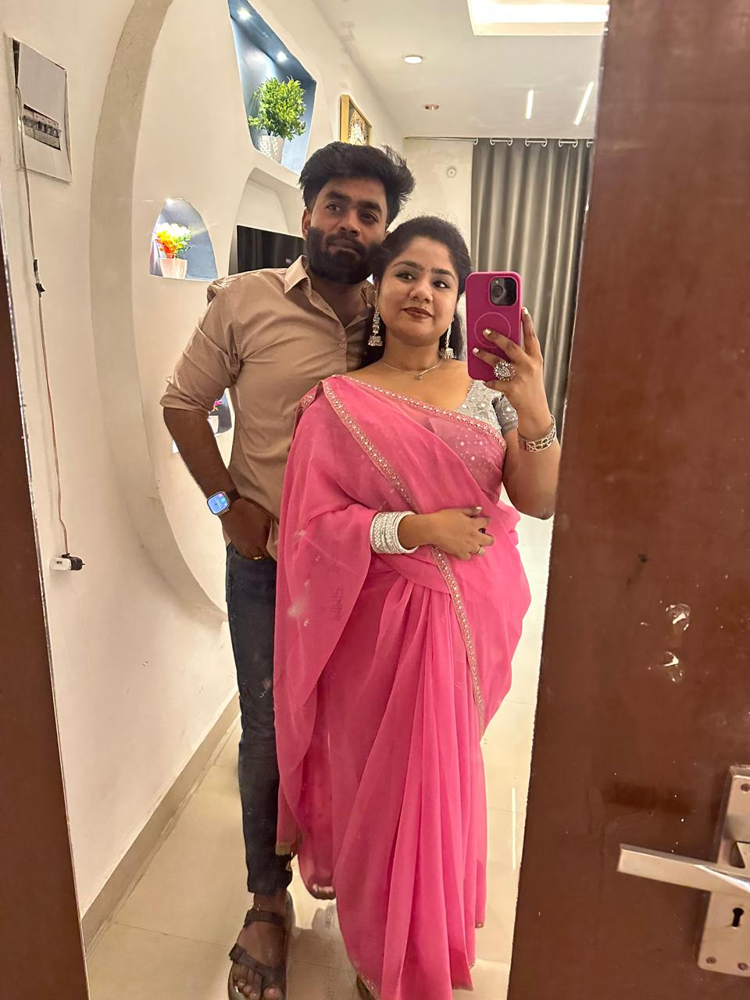

The backseat of a car
You and two friends climbed into the back of my car — and somewhere in that ordinary moment, something in
me quietly decided. I told myself it was a challenge. Looking back, I think it was just fate finding a
very small door to walk through.
images/01-backseat-of-the-car.jpeg
A broken leg, and you showing up anyway
I was laid up, useless, stuck at home — and you started talking to me every single day, just to check on
me. I don't think you knew it then, but that's exactly when "friends" stopped being the right word for us.

images/02-broken-leg.jpeg
The day we became "us"
Somewhere between the daily chats and the first ride, we stopped being two people who talked, and became
two people who chose each other.

images/03-became-us.jpeg
A cake, and a perfume I still have
You cut a cake for me and gifted me a Fastrack perfume — such a small thing to most people, and something
I still hold onto, all these years later.

images/04-cake-and-perfume.jpeg
You stayed through my hardest time
When things fell apart for me, you were there in a way I didn't know I needed. You know exactly what that
time meant to me — and somehow, in the middle of it, you became something more than anything else in my
life.

images/05-hardest-time.jpeg